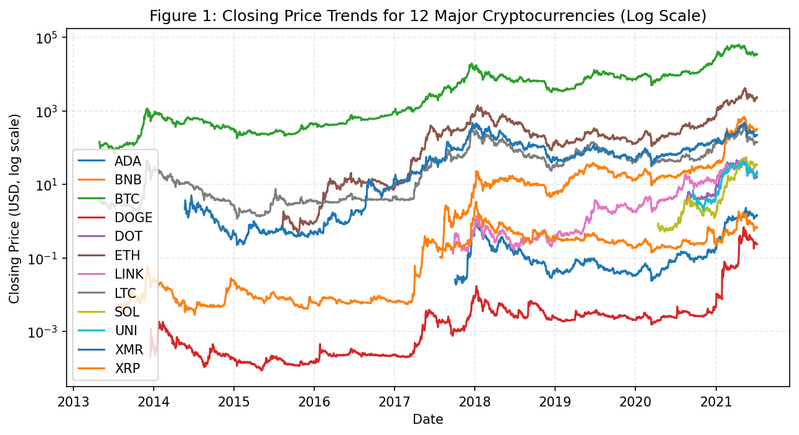
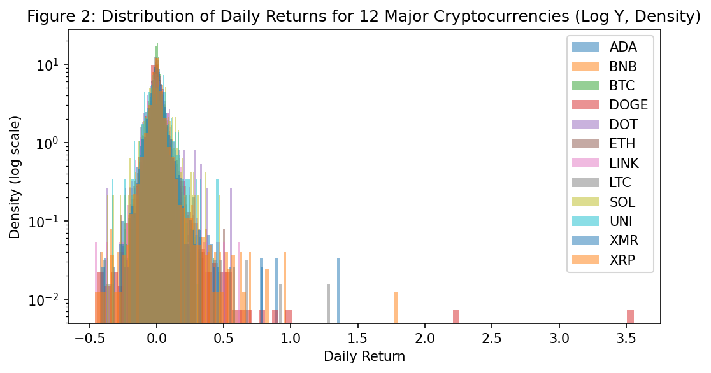
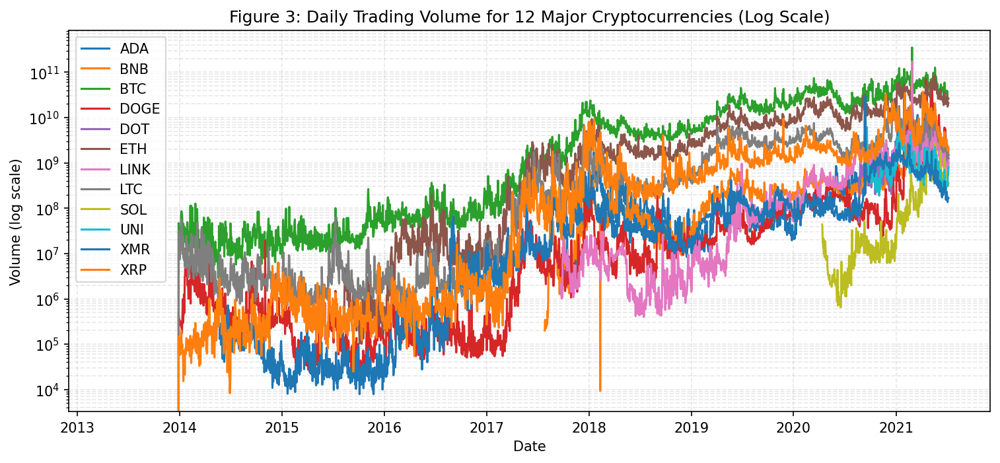
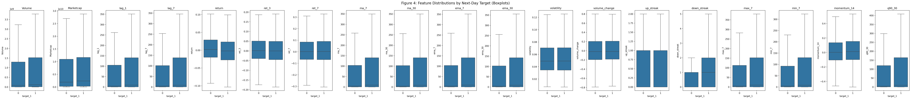
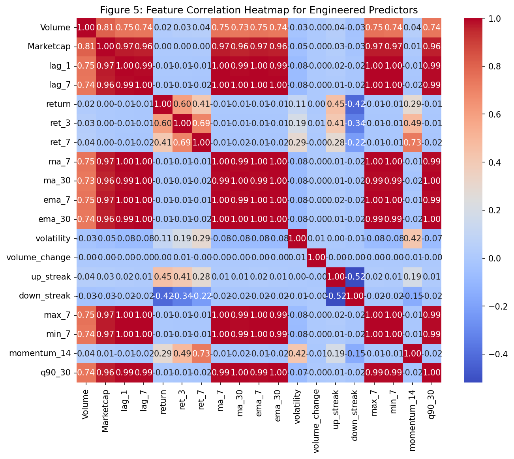
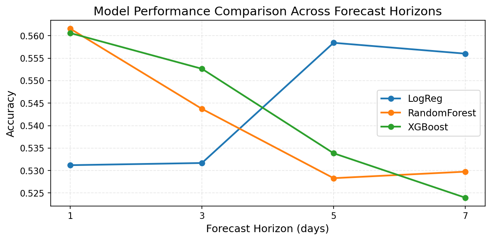
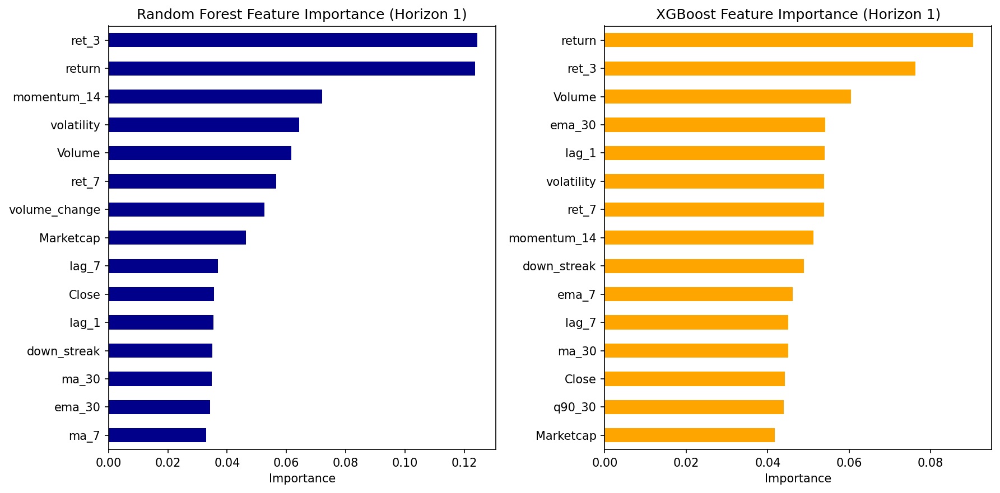

Cryptocurrency Price Movement Prediction Using Time-Series Machine Learning
This project explores whether short-term cryptocurrency price changes can be predicted using simple machine-learning models and basic time-series features. Using daily data for Bitcoin, Ethereum, and other coins, we engineer a range of features and apply logistic regression, random forest, and XGBoost models to classify price direction.
The models show small but consistent level of predictability for the 1 and 3 day horizons (with accuracy reaching about 0.56), while performance drops off quickly for longer forecasts. Tree-based models capture more short-term momentum, but overall gains are limited.
Introduction
Cryptocurrency markets change quickly and are very volatile. Past research shows that Bitcoin and other coins often move in ways that are hard to predict. This project asks: can recent price changes help machine learning models forecast short-horizon movement?
I use daily price data for 12 major cryptocurrencies. The goal is not to predict exact prices, but to see if machine learning can classify next-day and multi-day price direction using simple features.
Data
Data Overview
The data comes from Kaggle's Cryptocurrency Historical Prices. It has daily open, close, high, low, and volume for many coins.
I use 12 major cryptocurrencies: Bitcoin, Ethereum, Binance Coin, XRP, Litecoin, Cardano, Polkadot, Solana, Uniswap, ChainLink, Dogecoin, and Monero. Each coin is in a separate CSV file. I combine the data for analysis. Stablecoins (like USDT, USDC, Tether, Wrapped Bitcoin) are not used.
Feature Engineering
- Date: The date of each observation (used for time alignment, not as a predictor).
- Close: The closing price (used for target construction and reference, not as a predictor).
- Volume: Daily trading volume, reflecting market activity.
- Marketcap: Total market capitalization, indicating the overall value of the cryptocurrency.
- Lag Features: Previous closing prices (e.g., lag1, lag7) to capture short-term memory and trends.
- Returns and Momentum: n-day return (e.g., ret3, ret7) is the simple return over a fixed window:
\[
\mathrm{ret}_n = \frac{\mathrm{Close}_t - \mathrm{Close}_{t-n}}{\mathrm{Close}_{t-n}}
\]
- Moving Averages: Simple moving average (SMA)
\[
\mathrm{ma}_n(t) = \frac{1}{n} \sum_{i=0}^{n-1} \mathrm{Close}_{t-i}
\]
- Volatility: Rolling standard deviation of returns (volatility):
\[
\mathrm{volatility}_n(t) = \mathrm{std}(\mathrm{return}_{t-n+1}, \ldots, \mathrm{return}_t)
\]
- Volume Change: Change of daily trading volume
\[
\mathrm{volume\_change}_t = \frac{\mathrm{Volume}_t - \mathrm{Volume}_{t-1}}{\mathrm{Volume}_{t-1}}
\]
- Streaks: Consecutive up/down days (up_streak, down_streak) to capture persistent trends or reversals.
- Rolling Max/Min and Quantiles: Rolling max, rolling min, and rolling quantile (e.g., 90th percentile) for detecting price extremes.
- Multi-horizon targets: Binary labels for whether the price goes up in 1, 3, 5, or 7 days.
Exploratory Data Analysis

Figure 1: Closing Price Trends for 12 Major Cryptocurrencies (Log Scale)




Modelling
Model Selection and Training Data Preparation
Logistic Regression is used as a baseline since it shows how well a basic linear model can perform. Random Forest and XGBoost are added as more flexible models that can capture nonlinear patterns.
The dataset is split into 80% training set (16,603 samples) and 20% test set (4,151 samples).
Model Training and Evaluation
Logistic Regression
| Horizon | Accuracy |
|---|
| 1 | 0.5312 |
| 3 | 0.5317 |
| 5 | 0.5584 |
| 7 | 0.5560 |
Random Forest
| Horizon | Accuracy |
|---|
| 1 | 0.5616 |
| 3 | 0.5437 |
| 5 | 0.5283 |
| 7 | 0.5298 |
XGBoost (Extreme Gradient Boosting)
| Horizon | Accuracy |
|---|
| 1 | 0.5606 |
| 3 | 0.5526 |
| 5 | 0.5338 |
| 7 | 0.5240 |
Results
Overall Model Performance
| Horizon | LogReg | RandomForest | XGBoost |
|---|
| 1 | 0.5312 | 0.5616 | 0.5606 |
| 3 | 0.5317 | 0.5437 | 0.5526 |
| 5 | 0.5584 | 0.5283 | 0.5338 |
| 7 | 0.5560 | 0.5298 | 0.5240 |

Performance by Horizon
All three models (Logistic Regression, Random Forest, XGBoost) were evaluated on four forecast horizons (1, 3, 5, and 7 days). Overall performance ranges from 0.52 to 0.56,
Feature Importance (Horizon 1)

Discussion
References
- Rajkumar, S. (2018). Cryptocurrency Historical Prices. Kaggle. https://www.kaggle.com/datasets/sudalairajkumar/cryptocurrencypricehistory
- Urquhart, A. (2016). The inefficiency of Bitcoin. Economics Letters, 148, 80–82.
- Chu, J., Chan, S., Nadarajah, S., & Osterrieder, J. (2017). GARCH modelling of cryptocurrencies. Journal of Risk and Financial Management, 10(4), 17.
- Corbet, S., Lucey, B., Urquhart, A., & Yarovaya, L. (2019). Cryptocurrencies as a financial asset: A systematic analysis. International Review of Financial Analysis, 62, 182–199.
back